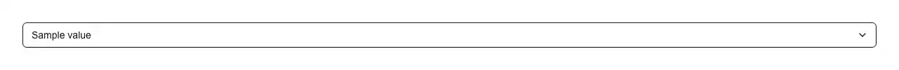

A country picker: all 249 ISO 3166-1 countries, named in the reader's own language, sorted the way that language sorts, and searchable by local name, English name or two-letter code. Reach for it wherever a form asks where someone is or where something is going: sign-up and onboarding; billing, shipping and delivery addresses; the country on a tax, VAT or GST field; the list of countries you actually ship to; the residence or citizenship question in KYC, AML and identity verification; the country ahead of a phone number's dial code; nationality and place-of-birth fields on visa, travel and immigration forms; the market or region a product, price or licence is available in; bank-account, payout and remittance destinations; customs declarations; and the "country" row in profile, account and organisation settings. Common asks it answers: "country select", "country picker", "country dropdown", "country selector react", "select country component", "list of countries react", "country combobox", "searchable country select", "country select with flags", "ISO country code select", "shadcn country select", "shadcn country picker", "react-select-country-list alternative", "country autocomplete", "country field for address form", "nationality select". Official shadcn/ui has no country, region, locale or flag item of any kind — its select, native-select and combobox are empty controls that know nothing about the world — so the data is on you, and the data is where hand-rolled versions go wrong. This one carries no name table at all: it holds 249 two-letter codes and asks `Intl.DisplayNames` for the names, which means every country arrives already translated into the reader's language (JP is "Japan" in English and "日本" in Japanese) and nothing has to be re-translated or re-checked when a country is renamed upstream. The curation that matters is what is left out: `Intl.DisplayNames` will just as happily name EU (European Union), UN (United Nations), EZ (Eurozone), QO (Outlying Oceania) and 001 (world), none of which is a place a parcel can go, so the code list is explicit rather than generated. Sorting goes through `Intl.Collator`, the difference between a usable list and a broken one: a plain `sort()` orders by code point, which drops every country whose name begins with an accent — Åland Islands, Österreich — below Zimbabwe at the very bottom, exactly where nobody scrolls, and it does it in every language that has accents. The filter reads three names per country, because a person has three ways to name one: the local name, the English name (typed constantly on non-English sites, because it is what the passport and the shipping label say) and the code itself — so a Japanese page finds 日本 when someone types "japan" or "JP", and an exact two-letter code wins outright so "in" reaches India rather than burying it under Indonesia. Accents and punctuation are folded away, so "cote divoire" reaches Côte d'Ivoire despite the typographic apostrophe no keyboard produces. A real combobox, not a styled div: the trigger is a `type="button"` with `role="combobox"` and `aria-expanded`, the panel is a `listbox` driven by `aria-activedescendant`, arrow keys, Home, End, Enter and Escape all work, the highlight scrolls itself into view through 249 rows, opening a field that already says Japan starts on Japan, and an outside press closes it. Works controlled (`value` + `onValueChange`) or uncontrolled (`defaultValue`), always emitting the alpha-2 code and never a display name, so what you store survives the reader switching language; `name` adds a hidden input so it submits with a native form; `countries` narrows the list to the places you ship to, and a stored code outside that narrowed list still shows its own name instead of silently reading as "nothing chosen"; `priority` pins the two or three countries most sign-ups come from above the alphabet; `flags` adds the flag emoji as a hint next to the name — off by default, because Windows ships no flag glyphs and renders every one of them as two bare letters; and `getCountryName()` is exported so an order summary or confirmation email spells the country exactly the way the picker did. Styled entirely with shadcn tokens (input, ring, accent, popover, muted-foreground), so it follows light and dark mode, and it ships zero dependencies — no country-data package, no icon package, one file.

Rendered on the shadcn default neutral palette with harness-generated props.
pnpm dlx shadcn@4.21.0 add @pulld/country-select
| licence | POINTER |
|---|---|
| primitive base | none |
| type | registry:ui |
| files | src/components/ui/country-select.tsx |
| npm deps pulled | none beyond the pre-installed peer set |
| registry deps | — |
| semantic / palette / hex | 11 / 0 / 0 |
| writes shared ui/ | yes — can overwrite the project’s own primitives |